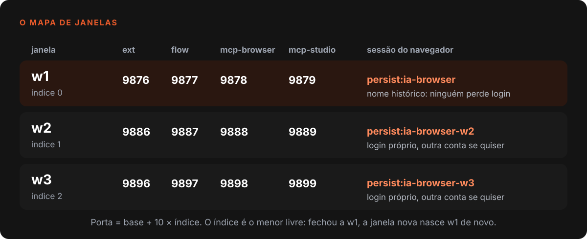
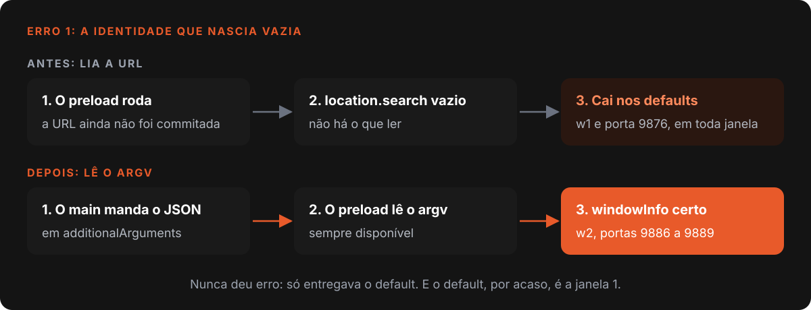
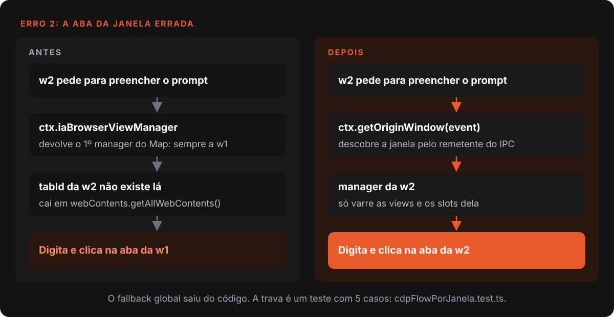
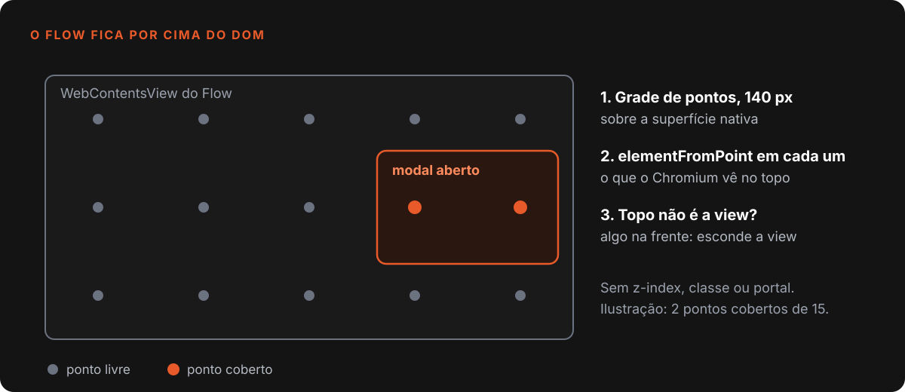

Nardoto
NardotoVárias janelas no mesmo app Electron, sem se misturar
Como o Studio roda N janelas no mesmo processo Electron: portas, sessões e downloads por janela, e o bug em que a janela 2 clicava na aba da janela 1.

O Nardoto Studio abre quantas janelas a pessoa quiser dentro do mesmo processo do Electron. Cada uma tem o próprio projeto, o próprio chat e o próprio navegador interno, onde roda a automação do Flow, o gerador de vídeo do Google.
Fazer isso funcionar foi menos "abrir outra BrowserWindow" e mais caçar tudo que o app guardava em um lugar só. A base entrou em 18/05/2026 e saiu na v7.2.0, como beta, no dia seguinte. Os erros deste post só apareceram em 09/09/2026, quando duas janelas passaram a usar o Flow juntas.
O que o código diz hoje (29/10/2026)
- O código pergunta "de qual janela veio este pedido?" (
getOriginWindow) 124 vezes, em 52 arquivos.- Cada janela ocupa 4 portas, com salto de 10 entre janelas: 9876 a 9879 na primeira, 9886 a 9889 na segunda.
- Quem decide a sessão do navegador de cada janela é um arquivo de 53 linhas,
iaBrowserPartitions.js, usado por outros 3 módulos.
Uma janela é uma identidade, quatro portas e um processo
Cada BrowserWindow carrega a página em um processo de renderização próprio 1. Por isso as stores Zustand de cada janela são independentes sem eu escrever uma linha. O trabalho foi dar identidade às janelas e separar o que mora no processo principal.
O createWindow pede ao contexto o menor índice livre, vira windowId = w{índice + 1} e calcula as portas: base mais índice vezes 10. São quatro serviços por janela: ponte da extensão, ponte do Flow, MCP do navegador e MCP do Studio. Se a porta estiver ocupada, o tryListen tenta a seguinte, até 3 vezes. Toda mensagem do processo principal sobre uma janela leva o prefixo [Win-wN], a única forma de ler o log de duas automações sem adivinhar quem falou.

Como o índice é sempre o menor livre, o id é reciclável: fechei a w1 e abri outra, nasce w1 de novo. Isso me custou depois: todo mapa por janela precisa ser limpo no fechamento. O main.js apaga a pasta de download e o projeto ativo no evento closed, porque uma entrada velha mandaria os downloads da janela nova para o projeto da antiga. O problema da porta fixa do servidor MCP, que só enxergava a janela 1, está no post sobre o chat pilotando o app.
O que é de cada janela e o que é de todas
Inventário montado a cada bug. Tudo aqui já foi, um dia, variável global.
| Estado | Como separa | Onde mora |
|---|---|---|
| Portas das 4 pontes | base + 10 × índice | main.js |
| Sessão do navegador | persist:ia-browser (w1), persist:ia-browser-wN |
iaBrowserPartitions.js |
| Aba do Flow | manager da janela de origem | bridge-browser-cdp.js |
| Pasta de download | mapa por windowId |
iaBrowserDownloadPathPorJanela |
| Projeto ativo | mapa por windowId |
ctx._activeProjectPorJanela |
| Dono do projeto | mapa caminho para windowId |
ctx.openProjects |
| Sidepanel do VEO3 | prefixo veo3_ (w1) ou veo3_wN_ |
storage-wrapper.js |
Continuam compartilhados o diretório de dados, o Python, a GPU e duas travas de dono único, a do Multi-VEO e a do Multi-TTS. A partition da janela principal também é a mesma, então o localStorage do renderer é um só. Há 68 ocorrências de localStorage em src/stores, e não auditei uma a uma se alguma vaza entre janelas.
Erro 1: toda janela se achava a w1
window.nardoto.windowInfo devolvia w1 em toda janela, com as portas da w1, mesmo com a URL da janela 2 trazendo ?win=w2 e as portas 9886 em diante. O parseWindowInfo() do preload lia window.location.search. Só que, quando o preload roda, a URL ainda não foi commitada: o search vem vazio e a função cai nos defaults, que por acaso são os da w1.
Esse código nunca funcionou; o bug só não aparecia porque a w1 é o default. Na janela 2, ela aceitava os eventos de download da janela 1 e rejeitava os seus, então o cartão do VEO3 nunca casava com o vídeo baixado. E "Nova Janela" nunca abria na tela inicial.

A correção foi mandar a identidade em additionalArguments, que o Electron acrescenta ao process.argv do renderer justamente para passar pequenos dados aos preloads 2. A lição: o preload parece rodar dentro da página, mas roda antes da navegação, e o que depende de location ali não dá erro, só entrega o default. Mais casos em bugs que só aparecem no cliente.
Erro 2: a janela 2 digitava na aba da janela 1
O Flow só aceita digitação e clique com isTrusted real, então o prompt e o clique em "Criar" saem por CDP, o protocolo de depuração do Chromium, em dois handlers (cdp:fill-prompt-flow-auto e cdp:click-submit-flow-auto). Eles achavam a aba pelo getter ctx.iaBrowserViewManager, que devolve o primeiro manager do mapa, sempre o da w1.
O tabId da janela 2 não existe nesse manager. O código caía num fallback com webContents.getAllWebContents() e pegava a primeira aba de Flow do processo. Os handlers nem recebiam o event. As duas automações viravam uma só, e o que doeu foi o silêncio: o prompt era digitado, o botão era clicado, tudo com sucesso. Só que na janela errada.

Agora o resolveFlowWebContents(event, tabId) descobre a janela pelo remetente com ctx.getOriginWindow(event) e procura só nas views dela, abas e slots do Multi-VEO. O fallback global saiu. O teste tests/unit/ipc/cdpFlowPorJanela.test.ts tem 5 casos, com duas janelas falsas; um garante que o tabId de outra janela não serve de atalho. Provei também no app real, numa instância isolada: a pasta Partitions/ia-browser-w2 nasceu quando a janela 2 abriu o Flow.
Ficou um degrau: quando a janela de origem não resolve, o código ainda cai no primeiro manager. O comentário diz que é melhor falhar, e o código faz um pouco menos que o comentário.
Sessão própria: um arquivo manda
Cada janela tem a sessão própria do navegador interno: cookies separados e, se a pessoa quiser, contas Google diferentes. A w1 ficou na partition histórica persist:ia-browser, para ninguém perder login ao atualizar; as demais usam persist:ia-browser-wN. O prefixo persist: é o que torna a sessão persistente 3.
O nome sai de um único módulo, por decisão. Quem varre sessões (sair da conta, limpar cache, limpar service workers no upgrade) chama partitionsDoNavegador(). Com listas próprias, "sair da conta" deixaria a janela 2 logada. A função junta a base, as janelas abertas e as pastas de janelas já fechadas. Aqui a reciclagem do id é desejada: a nova w2 herda o login da anterior.
O sidepanel do VEO3 teve o mesmo vazamento: todas as janelas o rodam na origem nardoto-sidepanel://, com um localStorage só, e o rascunho de prompts de uma aparecia na outra. Agora as chaves levam o prefixo veo3_wN_, e a w1 mantém o antigo para não perder o que já estava salvo.
Projeto aberto e Flow por cima de tudo
Duas janelas editando o mesmo draft_content.json corrompem o arquivo por corrida. O processo principal guarda um mapa do caminho para o windowId dono. Quem tenta abrir o mesmo projeto escolhe entre focar a janela dona, abrir em somente leitura ou cancelar. Se a dona crashou, a posse velha é limpa; ao fechar, ela avisa as outras com workspace:released. O limite, admitido no comentário do contexto: o bloqueio de escrita é da interface, não do disco.
A aba do Flow é uma WebContentsView, que vive acima do DOM, então todo modal precisa esconder a view. Durante meses isso foi uma lista de regras (z-index, classe fixed, portal), e cada modal fora dos critérios virava um remendo. Em 06/09/2026 troquei por um hit-test: o hook useOverlayCobreView.ts varre a view com pontos a cada 140 px e pergunta ao Chromium, com elementFromPoint, quem está no topo.

O Nardoto IDE teve a mesma doença: o workspace ativo era um único activeId em arquivo, e a janela 2 virava cópia da 1. Em 22/09/2026 virou um mapa por webContents.id.
O que ficou de fora
- Multi-VEO, uma janela por vez. Os 6 slots usam partitions globais, então a trava segue. A aba individual do Flow não tem essa limitação.
- Sem arrastar entre janelas e sem lembrar as janelas abertas ao fechar o app.
- Retry de porta ingênuo. O
tryListententa a porta mais 1, e a mais 1 da ponte da extensão (9876) é a ponte do Flow (9877) da mesma janela. Não vi acontecer e não testei.
O que eu levaria para qualquer projeto
- Dê identidade à janela por um canal que já existe no uso. O argv, não a URL.
- Todo estado global é suspeito. Com duas janelas, o "atual" é de quem?
- Um módulo só para o nome do recurso por janela.
- Fallback global esconde bug. Falhar alto vale mais que operar a janela errada em silêncio.
- Id reciclável pede limpeza no fechamento.
- Teste com duas janelas desde o dia um.
- Escreva sintoma, causa e como conferir, como conto em como eu trabalho com IA.
Referências
- Electron, modelo de processos
- Electron, WebPreferences e additionalArguments
- Electron, API de session e partitions
Escrito por Tharcisio Nardoto, engenheiro civil e criador do Nardoto Studio.